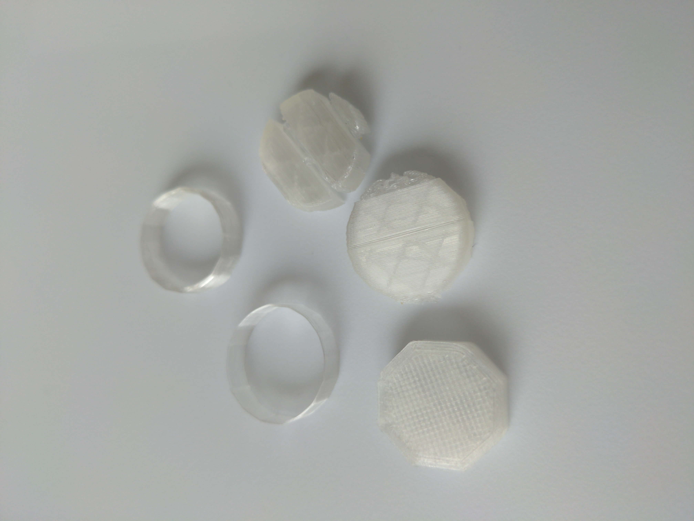

Documentation
Tools: Rhino, Cura, Caliper, & Ender 3 Pro
0. Printer Set-up

Major Steps
-
Follow the instruction provided within the product package.
- Adjust the extruder's eccentric nuts such that it does not wiggle.
-
Adjust build plate level.
-
Check for loose and tighten screws.
1. Quality Setting

Input
- A 2cm cube with the standard "low quality" settings and a brim
-
A 2cm cube with the standard "standard quality" settings and a brim
-
A 2cm cube with the standard "high quality" settings and a brim
-
A 2cm cube with a concentric top and bottom layer
2. Tolerance Setting

Input
- 20.0mm +/- 0.5mm cube with a 5.0mm +/- 0.5mm hole through it.
3.Wall Thickness & Support Setting

Input
- A tube 2cm in diameter and .5cm high with a single extrusion wall thickness
- A tube 2cm in diameter and .5cm high with a double extrusion wall thickness and random z-seam alignment
- A cylinder 2cm in diameter exported with a 0.1cm tolerance, printed on its round side with supports
- A cylinder 2cm in in diameter exported with a 0.005cm tolerance